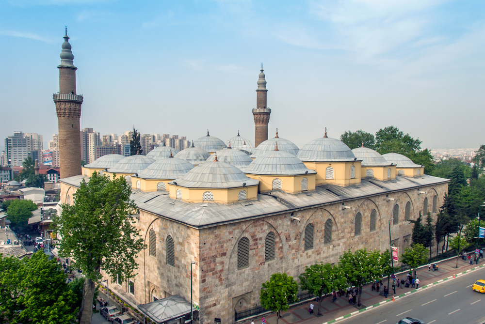
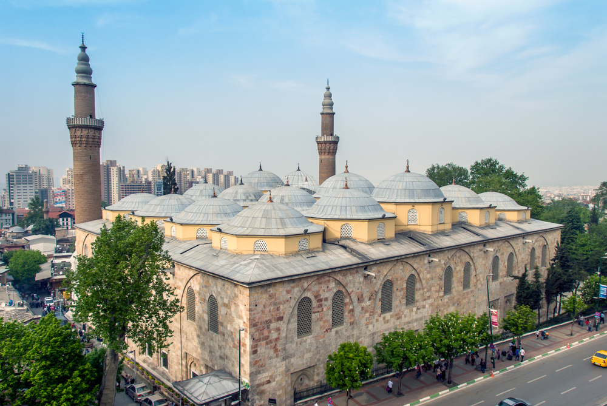
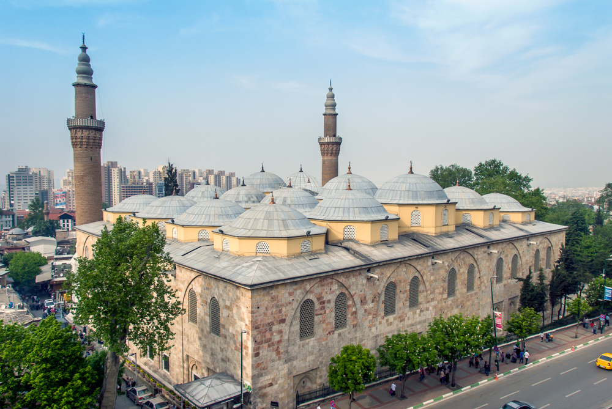

Bursa Ulu Camii, 1396-1399 yılları arasında Yıldırım Bayezid tarafından yaptırıldı. Niğbolu Zaferi sonrası verdiği 20 cami sözü, bu yapıyla tek camide 20 kubbe olarak hayata geçirildi. Caminin mimarı büyük ihtimalle Ali Neccar’dır. Cami, 55x69 metre boyutlarıyla oldukça geniştir. Üstü 20 kubbeyle örtülüdür. Bu kubbeler, 12 büyük sütunla taşınır. Çok kubbeli cami planının en güzel örneğidir. Kubbeler sade ama dengeli bir mimari uyum içindedir. Caminin iki minaresi vardır. Biri kuzeybatı köşesinde, diğeri doğu cephesindedir. Minareler sade Osmanlı üslubundadır. Tuğla ve taş kullanılmış, süslemeye fazla yer verilmemiştir. Yükseklikleriyle camiye güçlü bir siluet kazandırırlar.
İç mekânın ortasında bir şadırvan bulunur. Kubbenin altındadır ve yukarıdan gelen ışıkla mekâna aydınlık verir. Bu özellik, Osmanlı camileri arasında oldukça özgündür. Ulu Camii, İslam hat sanatının en zengin koleksiyonlarından birine sahiptir. Duvarlarda 192 adet hat levhası yer alır. Ayetler, Allah’ın isimleri ve hadisler büyük ustalar tarafından yazılmıştır. Minber, ceviz ağacındandır. Çivisiz ve tamamen geçme oyma tekniğiyle yapılmıştır. Üzerinde astronomik figürler bulunduğu düşünülür. Mihrap ise taş işçiliğiyle öne çıkar, sade ama etkilidir. Ulu Camii, hem mimarî hem sanatsal hem de manevî yönüyle Bursa’nın simgesidir. UNESCO Dünya Mirası listesindeki Hanlar Bölgesi’nin tam kalbinde yer alır. Yerli ve yabancı ziyaretçiler için vazgeçilmez bir duraktır.
